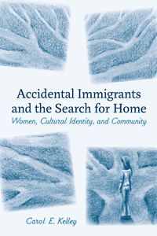

Reveals how four very different women seek a sense of belonging, identity, and home through the lifelong process of immigration
Reveals how four very different women seek a sense of belonging, identity, and home through the lifelong process of immigration


 Reveals how four very different women seek a sense of belonging, identity, and home through the lifelong process of immigration
Reveals how four very different women seek a sense of belonging, identity, and home through the lifelong process of immigration

|  |
Accidental Immigrants and the Search for HomeWomen, Cultural Identity, and CommunityCarol E. Kelleypaper EAN: 978-1-43990-946-1 (ISBN: 1-4399-0946-6) |
"A valuable contribution to the immigration debate, Accidental Immigrants and the Search for Home broadens the discourse about a humane immigration policy for uprooted family members neither seeking work nor separately documented."
—Mary Catherine Bateson, author of Composing a Further Life: The Age of Active Wisdom
The effect of immigration on individual lives is not short-lived. Those who stay permanently in an adopted country go through a continual process of adjustment and learning about both their new country and themselves. The four women profiled in Carol Kelley's poignant book, who moved to new countries not for economic or political reasons, but for marriage, education, or career, challenge immigrant stereotypes as their lives are transformed.
The intimate stories of these "accidental" immigrants broaden conventional notions of home. From a Maori woman who moves to Norway to the daughter of an Iranian diplomat now living in France, Kelley weaves together these stories of the personal and emotional effects of immigration with interdisciplinary discussions drawn from anthropology and psychology. Ultimately, she reveals how the lifelong process of immigration affects each woman's sense of identity and belonging and contributes to better understanding today's globalized society.
Excerpt available at www.temple.edu/tempress
"What accounts for choice in migration? What is the difference between accidental and economic migration? These questions are at the heart of this valuable book, which analyzes women�s immigration stories. One of the unique contributions of Accidental Immigrants and the Search for Home is Kelley�s detailed and complex account of women who leave their country for the sake of marriage, adventure, and romance. Kelley also documents the lives of privileged women for whom immigrating to another country is not grounded in necessity, but rather in the idea of travel and self-exploration. The narratives, which span decades, bring to life the struggle that these women encounter as they reconfigure their notion of home and feelings of belonging. The compelling multidimensional, multifaceted narratives provide insights into identity formation in adopted countries."
—Sunil Bhatia, Professor and Chair of Human Development at Connecticut College
"Building parallels among diverse stories, Kelley presents the physical and emotional journeys of four 'accidental immigrants.' Now middle-aged, these four women reflect on leaving their home country because of life choices like education or relationships. Anthropologist Kelley tackles issues of home, belonging, adjustment, transnationalism, acculturation, and the experience of being foreign through the eyes of her informants.... Kelley�s subjects are introspective and intelligent, and she examines the complexities of each set of circumstances."
—Publishers Weekly
"This accessible study presents the immigrant narratives of four women who left their families and places of residence because of romance, adventure, or study opportunities in other countries. The book contributes to scholarship about home and homemaking through rich descriptions of the participants' complex and changing feelings about relationships with their families 'back home' and those with new partners, relations, and friends.... The author's use of a narrative approach to explore these women's choices underscores how complex, multidimensional, and occasionally contradictory migration decision making is.... [The] book is valuable in identifying the emotional and spiritual dimensions of seeking and finding 'home' elsewhere. Summing Up: Recommended."
—CHOICE
"Kelley eloquently and compassionately presents a well-researched study of four women whose lives changed dramatically after emigrating from their home countries for reasons of education, career, and/or marriage.... This study is quite apt given that the topic of immigration appears in news reports and other media regularly, and much of the world�s population consists of people who are either emigrants or who are living with/alongside those who have immigrated.... Accidental Immigrants is a valuable contemporary work that should appeal to a general audience and could certainly be included in a basic college course.... Accidental Immigrants is a refreshing account that tells the stories of four relatively privileged women who chose to adopt new countries as their homes instead, as is often the situation, of being forced to flee."
—Oral History Review
"Kelley achieves an intimate understanding of how the individual circumstances leading to migration have shaped these women's sense of belonging and of how specific situations have affected their identities and attachments to former and new homes. Such accounts of personal experiences are not meant to generate universal statements about migration but, rather, in-depth knowledge concerning the insider's perspective on the experience of migration, thereby also adding ethnographic 'flesh' to more theoretical debates related to issues of migration, belonging, and identity formation.... [T]he structuring of the book [is] convincing as it allows for the contextualization of the women's life courses in a comparative perspective and reveals that immigration is not a temporary process but continuously affects an immigrant's identity and sense of belonging--albeit in different ways and to varying degrees of acuteness depending on a person's phase of life and in relation to situation and circumstances."
—American Anthropologist
Carol E. Kelley is an anthropologist and former lawyer who has worked as a research consultant for universities and nonprofit organizations.
Immigration Studies
Women's Studies
Anthropology
© 2016 Temple University. All Rights Reserved. This page: http://www.temple.edu/tempress/titles/2240_reg.html.